导语：西大的校园，处处是生机；西大的学子，各各似英才。你印象里的西大是什么模样呢？让我们跟随一组图片，一起来看看那些我们熟悉的西大风景。
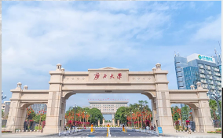
历史的辉煌与如今的昌荣，都在这气势磅礴的大门中一并展露。它将带着西大人不变的精神，引领我们走向更美好的未来。
夜，寂静中孕育着学识。每当夜晚的黑幕拉开，西大学子们也纷纷投入另一场无声的对知识的探求。
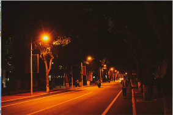
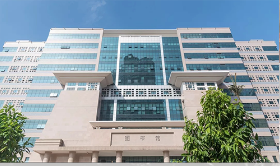
这是被西大人奉为圣地的地方，无论白天黑夜，这里永远不缺少专注学习的学子们。
印象西大
月色下的荟萃楼，更多了几分迷人的色彩。
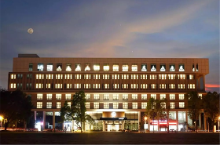
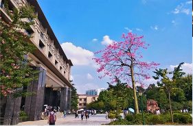
你可曾发现，在自己几乎天天去教室的路上，风景竟如此的令人陶醉。
回望：1928年6月，广西省政府拨100万银元作为广西大学开办费。同年9月5日，省政府发布第1720号训令，聘任马君武、盘珠祁为省立广西大学正、副校长。10月10日，广西大学在梧州市正式开学。办学之初，马君武校长提出“锄头主义”和“三拼”精神。在马君校长的带领下，广西大学开启了自己的新时代。
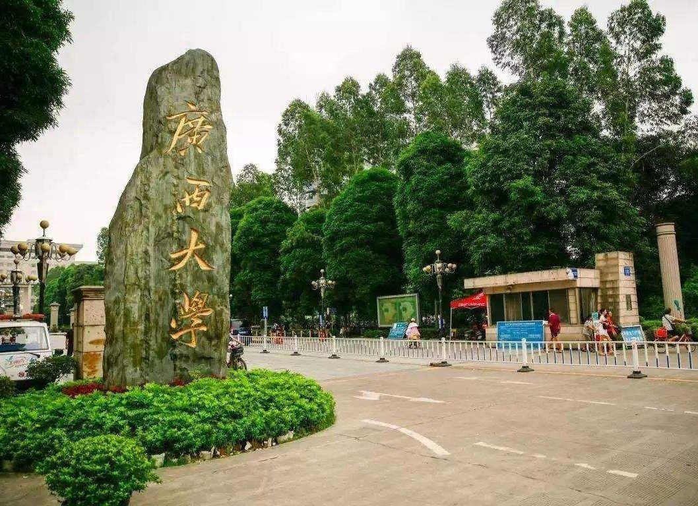
建校初期，中国正处于抗战时期，西大校歌由马君武校长亲自填词、广西大学化学系讲师汤铁民作曲后，马君武校长又结合时局特征将校歌歌词进行部分改动。歌词中写道：“保卫中华，发达广西，是我们立校本意”，这是战火硝烟中的一代学子的牺牲报国的呐喊。2008年，建校80周年前夕，校庆宣传组集体修改了校歌歌词，形成了第三版的《广西大学校歌》。
辉煌西大
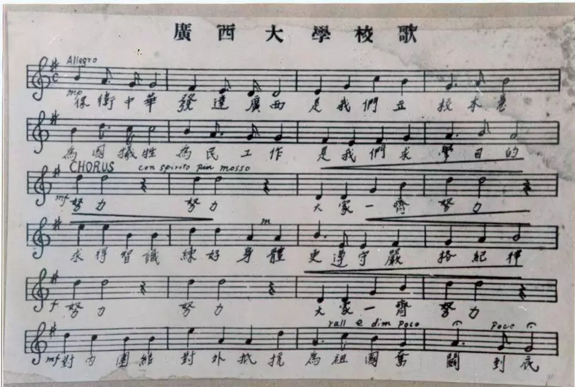
1999年6月，广西大学“211工程”建设项目可行性论证报告获国家计划委员会批准，正式跻身于国家重点建设高校的行列。
当今：2018年8月23日，在第18届雅加达亚运会女子50米蛙泳决赛中，中国选手、广西大学体育学院2017级运动训练专业学生冯君阳以31秒16的预赛成绩位于第五泳道出战，在激烈的角逐后以31秒24的成绩排名第三，斩获季军，得到一枚宝贵的铜牌，这是广西运动员时隔16年后再一次登上亚运会游泳项目的领奖台。
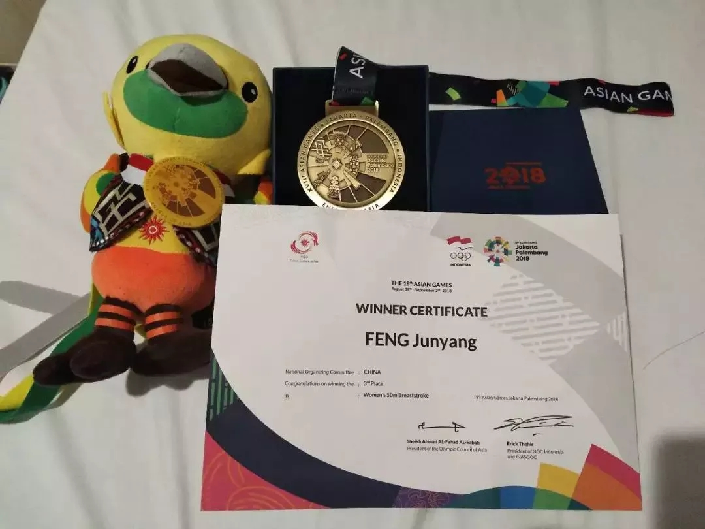
2018年10月，首届世界大学生啦啦操锦标赛在波兰中部城市罗兹举行，广西大学啦啦操队代表中国队出征，在技巧啦啦操大型混合团体项目中获得世界冠军。这是广西大学啦啦操队蝉联全国13连冠后又一次获得桂冠。此前，广西大学啦啦操队作为奥运指定代表队参加2008年北京奥运会，并受邀为2010年广州亚运会做现场表演。
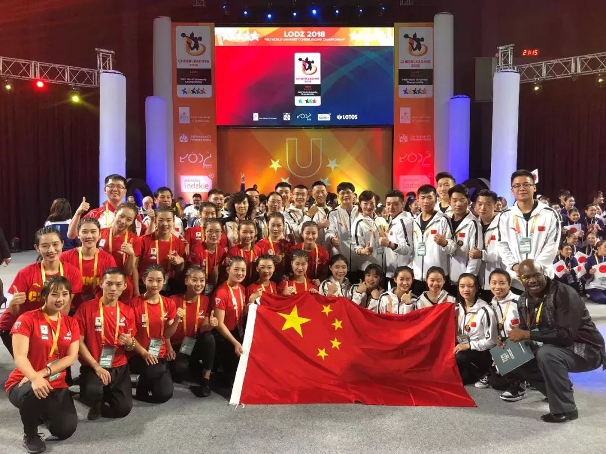
古往今来，西大在历史的浮浮沉沉中不断地磨炼着自己，西大的学子们也不负先人的厚望，勇创佳绩。90周年校庆后，相信大家都会更加努力地为西大的美好明天奋斗，为祖国的宏伟大业贡献自己的一份力量，为西大百年更添辉煌！
以上图片均来自网络
文案部分转载于网络
90周年校庆精彩活动一览
12月2日上午，广西大学在校南大门、东门隆重举行大门落成揭牌启用仪式。校党委书记刘正东携全体在校的校领导共同为两座校门落成揭幕，校长赵跃宇宣布两座校门正式启用，副校长钱健主持仪式并介绍了大门建设情况。
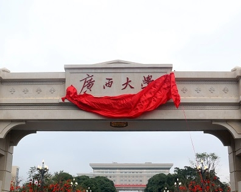
西大学校史馆于90周年校庆期间，在12月7日上午隆重举行了开馆仪式，展室位于本校图书馆一楼。校史馆的建设，有利于增强校友对母校的认同感和凝聚力，吸引社会各界人士关注学校的建设和发展，充分展示了学校90年辉煌的办学历史和成就。
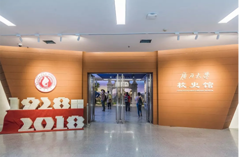
九秩华诞齐同庆，丹青吐艳翰墨香。12月5日，为庆祝广西大学九十周年华诞而举办的“同庆九秩，逐梦百年”书法美术摄影作品展在广西大学图书馆（二期）一楼中庭广场隆重开幕。本次书法美术摄影作品展共收到书画摄影作品近500幅，展出300多幅。
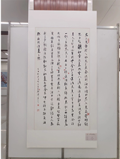
12月8日晚，广西大学建校90周年主题晚会在西校园体育场隆重举行，全国侨联原主席、广西大学北京校友会名誉会长庄炎林，全国人大教育科学文化卫生委员会副主任委员吴恒，全体校领导与从五湖四海、全国各地归来参加校庆的校友及师生代表等近6000人现场同享艺术盛宴。
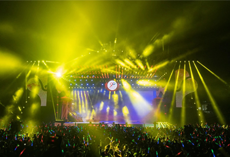
同庆九秩，逐梦百年。12月8日上午，广西大学在校内举行建校90周年庆祝大会，国内外专家学者和高校代表、广西大学校友和师生代表共5000多人参加。十一届全国政协副主席李兆焯，广西壮族自治区党委书记鹿心社，广西壮族自治区党委副书记、自治区主席陈武共同出席大会，并为广西大学从教40年以上的教师代表颁发荣誉证书。
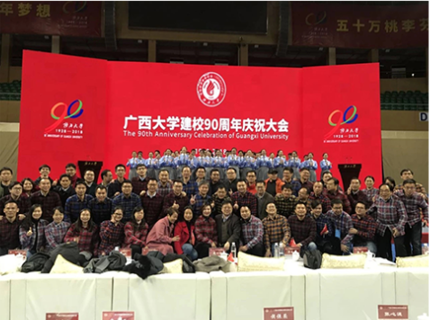
致敬西大九十华章，寄情空谷十八芳华
【关键词：西大、华章、空谷】
空谷校园网西大6月19日讯（图、文/记者 国艳琪）
“空谷陪西大走了18年，对90年来说很短，但我相信空谷能陪西大继续走下去，就像谷哥空姐们慢慢陪着空谷走了18年。”晚会结束后，站长陈志敏对记者说道。
· 6月19日晚，空谷驻邕高校明星演唱会暨第十一届空谷嘉年华闭幕式晚会在广西大学（以下简称西大）大礼堂落下帷幕。本次晚会汇集了广西各大高校能歌善舞的学生，为西大学子呈现了一场激情和温情并重的视听盛宴。
· 在两个半小时的晚会中，空谷为观众安排了各种类型的节目，歌曲类节目中有深情款款的男女情歌对唱、别出心裁的改编翻唱、嗨翻全场的摇滚重金属、霸气侧漏的饶舌说唱及致敬青春的串烧等等；舞蹈类节目中，《创造101＋eiei》引爆全场热情，场下欢呼声、尖叫声不断。大礼堂舞台两侧的巨大投影仪上快速滚动着观众们的“心声”，每到一个节目，投影仪上便出现各种“告白”，活跃着现场气氛。
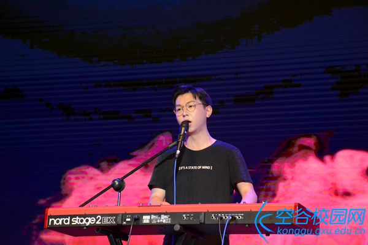
sky reach乐队演唱《易燃易爆炸》，嗨翻全场
晚会结尾，全场一片黑暗，音乐响起，隐藏在台下各处的歌手们在一束追光灯下突然出现，与观众近距离接触，唱着由观众事先投票选出的歌曲。据陈志敏介绍，这是本次晚会的一个特别环节——“线上点歌环节”，在13日晚会预热宣传中，空谷校园传媒公众号推出了歌手们的个人歌单，观众票选在晚会现场最想听的歌曲。虽然晚会临近结束，但这个环节却是整场晚会的高潮，场下观众纷纷拿出手机，打开手电筒，随音乐节奏挥舞，一时间台下一片灯光璀璨，观众大声跟唱歌曲的声音响彻大礼堂。
·我很喜欢特别环节，歌手们来到舞台下方，在聚光灯下唱给我们听，每一次的转身都会有怦然心动的感觉，可以看出空谷办这台晚会真的很用心，很努力。”参加晚会的新闻传播学院学生罗凤琴对记者说。 据空谷内容副站长钟诗霖介绍，为了办好此次晚会，空谷全体人员付出了巨大努力。2017年12月空谷组建了这一届的空谷嘉年华筹备工作组，断断续续开始做前期工作，在临近晚会的两个月内确定各项工作的进程，直到19日晚会举办，总共持续了半年时间。
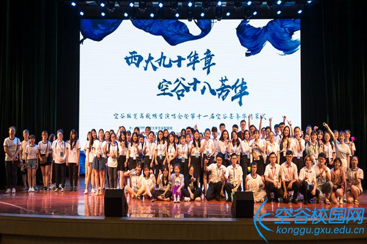
晚会结束，空谷全体工作人员合影留念
“我们努力集结所有精品节目就是想给大家带来一场不一样的晚会。我们希望这场晚会能成为大家美好的回忆”，陈志敏说道，“而且这场晚会对我、对空谷、对西大都有着特殊的意义。对我而言，这是我在空谷三年青春的一个圆满结尾；对空谷而言，谷哥空姐们陪伴空谷来到了她的第十八年，期盼空谷未来会更好；对西大而言，九十周年校庆即将来临，我们也想以此为契机为母校的校庆献礼，表达我们的感谢与热爱之情。”
“2018年，西大迎来了九十周年校庆，西大学子们也会秉承着‘勤恳朴诚，厚学致新’的校训为西大赢得荣光。2018年，广西壮族自治区成立六十周年，我们八桂儿女也要不忘初心，阔步迈上新征程。尽管时间摆渡，但我们会将空谷佳音传响四方，坚信未来可期！”最后，钟诗霖坚定地对记者说。
见习编辑 柯人宁
审核 钟诗霖
（文章与图片均转载自空谷校园网）